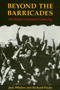
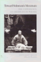

Browse
other Author lists:
A B C
D E F
G H I
J K L
M N O
P Q R
S T U
V W X
Y Z |

|
The
Education of a University President
Wachman,
Marvin, foreword by James W. Hilty
240 pp • 6x9 • Spring 2005
cloth 978-1-59213-376-5
|
 |
American Dunkirk
The Waterborne Evacuation of Manhattan on 9/11
Kendra, James and Tricia Wachtendorf
194 pp • 5.5x8.25 • Spring 2016
paper 978-1-4399-0821-1
cloth 978-1-4399-0820-4
|

|
Tough
Choices
In Vitro Fertilization and the Reproductive Technologies
edited
by Stephenson, Patricia and Marsden G. Wagner
192 pp • 5.5x8.25 • Fall 1993
cloth 978-1-56639-060-6 |

|
Cocaine
Changes
The Experience of Using and Quitting
Waldorf,
Dan, Craig Reinarman and Sheigla Murphy
336 pp • 5.5x8.25 • Fall 1991
paper 978-1-56639-013-2
cloth 978-0-87722-863-9 |

|
The
Effects of the Nation
Mexican Art in an Age of Globalization
edited
by Good, Carl and John V. Waldron
232 pp • 6x9 • Spring 2001
paper 978-1-56639-866-4
cloth 978-1-56639-865-7
|

|
The
Caring Relationship
Elderly People and Their Families
Qureshi,
Hazel and Alan Walker
287 pp • Fall 1989
cloth 978-0-87722-663-5 |
|
Proceedings
of the Black State Conventions, 1865-1900
Volume I
edited
by Foner, Philip S. and George E. Walker
Spring 1980
cloth 978-0-87722-149-4 |
|
Proceedings
of the Black State Conventions, 1840-1865
Volume II
edited
by Foner, Philip S. and George E. Walker
405 pp • Fall 1985
cloth 978-0-87722-145-6 |

|
Black
Theatre
Ritual Performance in the African Diaspora
edited
by Harrison, Paul Carter, Victor Leo Walker II and Gus Edwards
432 pp • 7x10 • Spring 2002
paper 978-1-56639-944-9
cloth 978-1-56639-943-2
|

|
Savoring the Salt
The Legacy of Toni Cade Bambara
edited by Holmes, Linda Janet and Cheryl A. Wall
320 pp • 6x9 • Fall 2007
paper 978-1-59213-625-4
cloth 978-1-59213-624-7
|

|
The Philadelphia Reader
edited
by Huber, Robert, and Benjamin Wallace, foreword by Buzz Bissinger
296
pp • 6x9 • Spring 2006
paper 978-1-59213-461-8
cloth 978-1-59213-460-1
|

|
Mickey
Mouse History and Other Essays on American Memory
Wallace,
Michael
336 pp • 6x9 • Spring 1996
paper 978-1-56639-445-1
cloth 978-1-56639-444-4
|

|
Freedom
Without Responsibility
Waller,
Bruce N.
256 pp • Fall 1990
cloth 978-0-87722-717-5 |

|
It
Comes from the People
Community Development and Local Theology
Hinsdale,
Mary Ann, Helen M. Lewis and S. Maxine Waller
400 pp • 6x9 • Fall 1994
paper 978-1-56639-212-9
cloth 978-1-56639-211-2
|

|
The
Uncertainties of Knowledge
Wallerstein,
Immanuel
224 pp • 5.5x8.25 • Spring 2004
paper 978-1-59213-243-0
cloth 978-1-59213-242-3
|

|
Unthinking
Social Science
The Limits of Nineteenth-Century Paradigms
Wallerstein,
Immanuel
304 pp • 6x9 • Spring 2001
paper 978-1-56639-899-2
cloth 978-1-56639-898-5
|

|
Legacy and Legitimacy
Black Americans and the Supreme Court
Clawson, Rosalee A. and Eric N. Waltenburg
232 pp • 5.5x8.25 • Fall 2008
paper 978-1-59213-903-3
cloth 978-1-59213-902-6
|

|
Thinking
about the Baby
Gender and Transitions into Parenthood
Walzer,
Susan
224 pp • 5.5x8.25 • Fall 1998
paper 978-1-56639-631-8
cloth 978-1-56639-630-1
|
|
Distant Corners
American Soccer's History of Missed Opportunities and Lost Causes
Wangerin, David
264 pp • 6x9 • Spring 2011
paper 978-1-4399-0631-6
cloth 978-1-4399-0630-9
|

|
Soccer in a Football World
The Story of America's Forgotten Game
Wangerin, David
360 pp • 5.25x8.5 • Spring 2008
paper 978-1-59213-885-2
|

|
The New York Young Lords and the Struggle for Liberation
Wanzer-Serrano, Darrel
244 pp • 6x9
• Spring 2015
paper 978-1-4399-1203-4
cloth 978-1-4399-1202-7 |

|
Exploiting the Wilderness
An Analysis of Wildlife Crime
Warchol, Greg L.
210 pp • 6x9 • Fall 2017
paper 978-1-4399-1367-3
cloth 978-1-4399-1366-6
|

|
A New Brand of Business
Charles Coolidge Parlin, Curtis Publishing Company, and the Origins of Market Research
Ward, Douglas B.
240 pp • 5.5x8.25 • Spring 2009
cloth 978-1-43990-015-4
|
|
Knowledge,
Structure, and Use
Implications for Synthesis and Interpretation
edited
by Ward, Spencer A. and Linda J. Reed
Fall 1988
cloth 978-0-87722-331-3 |

|
How
I Got Over
Clara Ward and the World-Famous Ward Singers
Ward-Royster,
Willa, as told by Toni Rose, foreword by Horace Clarence Boyer
263 pp • 6x9 • Spring 2000
paper 978-1-56639-490-1
cloth 978-1-56639-489-5
|

|
Gatherings
in Diaspora
Religious Communities and the New Immigration
edited
by Warner, Stephen R. and Judith G. Wittner
416 pp • 6x9 • Spring 1998
paper 978-1-56639-614-1
cloth 978-1-56639-613-4
|

|
The
Forms of Power
From Domination to Transformation
Wartenberg,
Thomas E.
320 pp • Fall 1989
paper 978-0-87722-905-6
cloth 978-0-87722-648-2 |

|
Sounding Salsa
Performing Popular Latin Dance Music in New York City
Washburne, Christopher
272 pp • 6x9 • Spring 2008
paper 978-1-59213-316-1
cloth 978-1-59213-315-4
|

|
"Other
Sheep I Have"
The Autobiography of Father Paul M. Washington
Washington,
Paul M. with David McI. Gracie, afterword by Barbara Harris
280 pp • 5.5x8.25 • Spring 1994
paper 978-1-56639-178-8
cloth 978-1-56639-177-1
|
|
Ghostly Encounters
The Hauntings of Everyday Life
Waskul, Dennis with Michele Waskul
164 pp • 5.5x8.25 • Spring 2016
paper 978-1-4399-1289-8
cloth 978-1-4399-1288-1
|

|
Street
Addicts in the Political Economy
Waterston,
Alisse
304 pp • 5.5x8.25 • Fall 1992
paper 978-1-56639-574-8
cloth 978-0-87722-992-6 |

|
Love,
Sorrow, and Rage
Destitute Women in a Manhattan Residence
Waterston,
Alisse
235 pp • 5.5x8.25 • Spring 1999
paper 978-1-56639-707-0
cloth 978-1-56639-706-3
|

|
Introduction
to Animal Rights
Your Child or the Dog?
Francione,
Gary L., foreword by Alan Watson
272 pp • 6x9 • Fall 2000
paper 978-1-56639-692-9
cloth 978-1-56639-691-2
|
|
Society
and Legal Change
Watson,
Alan, foreword by Paul Finkelman
168 pp • 5.5x8.25 • Fall 2001
paper 978-1-56639-920-3
cloth 978-1-56639-919-7
|

|
America's
Jews in Transition
Waxman,
Chaim
290 pp • Fall 1983
paper 978-0-87722-329-0
cloth 978-0-87722-321-4 |

|
Return
of the Indian
Conquest and Revival in the Americas
Wearne,
Phillip, foreword by Rigoberta Menchu
264 pp • 7.5x9.5 • Fall 1996
paper 978-1-56639-501-4
cloth 978-1-56639-500-7 |

|
Their
Day in the Sun
Women of the Manhattan Project
Howes,
Ruth H. and Caroline C. Herzenberg, foreword by Ellen C. Weaver
280 pp • 6x9 • Fall 1999
paper 978-1-59213-192-1
cloth 978-1-56639-719-3
|

|
Numbers on the Move
1 2 3 Dance and Count with Me
Benzwie, Teresa, Illustrated by Mark Weber
32 pp • 11x8.5 • Spring 2011
cloth 978-1-4399-0342-1 |
|
Philadelphia
Preserved
Catalog of the Historic American Buildings Survey
Webster,
Richard J., introduction by Charles E. Peterson
Spring 1975
paper 978-0-87722-215-6
cloth 978-0-87722-089-3 |

|
Uruguay
Nunca M�s
Human Rights Violations, 1972-1985
Servicio
Paz y Justicia, translated by Elizabeth Hampsten, introduction by
Lawrence Wechsler
360 pp • 6x9 • Fall 1992
paper 978-1-56639-146-7
cloth 978-0-87722-953-7
|
|
Knowledge for Social Change
Bacon, Dewey, and the Revolutionary Transformation of Research Universities in the Twenty-First Century
Benson, Lee, Ira Harkavy, John Puckett, Matthew Hartley, Rita A. Hodges, Francis E. Johnston, and Joann Weeks
206 pp • 6x9 • Spring 2017
paper 978-1-4399-1519-6
cloth 978-1-4399-1518-9
|

|
The
Asian American Movement
Wei,
William
376 pp • 6x9 • Spring 1993
paper 978-1-56639-183-2
cloth 978-1-56639-049-1
|
|
Acres
of Diamonds
Conwell,
Russell H., foreword by Russell F. Weigley, introduction by
David Adamany
96 pp • 5x7 • Spring 2002
cloth 978-1-56639-962-3
|

|
Contemporary Social Constructionism
Key Themes
Weinberg, Darin
214 pp • 5.5x8.25 • Spring 2014
paper 978-1-4399-0925-6
cloth 978-1-43990-924-9
|

|
Of
Others Inside
Insanity, Addiction, and Belonging in America
Weinberg,
Darin, foreword by Bryan S. Turner
256 pp • 6x9 • Fall 2005
paper 978-1-59213-404-5
cloth 978-1-59213-403-8
|
|
Sins
of the Parents
The Politics of National Apologies in the United States
Weiner,
Brian A.
256 pp • 5.5x8.25 • Spring 2005
paper 978-1-59213-318-5
cloth 978-1-59213-317-8
|

|
The
Forgotten Network
DuMont and the Birth of American Television
Weinstein,
David 240 pp • 6x9 • Spring 2004
paper 978-1-59213-499-1
cloth 978-1-59213-245-4
|

|
Ideology
and Practice in Schooling
edited
by Apple, Michael W. and Lois Weis
286 pp • 6x9 • Spring 1983
paper 978-0-87722-313-9
cloth 978-0-87722-295-8
|
|
Applications
of Feminist Legal Theory to Women's Lives
Sex, Violence, Work, and Reproduction
edited
by Weisberg, D. Kelly
1200 pp • 7x10 • Spring 1996
paper 978-1-56639-424-6
cloth 978-1-56639-423-9
|
|
Feminist
Legal Theory
Foundations
edited
by Weisberg, D. Kelly
640 pp • 7x10 • Spring 1993
paper 978-1-56639-029-3
cloth 978-1-56639-028-6
|

|
Feminism
and Community
edited
by Weiss, Penny A. and Marilyn Friedman
432 pp • 6x9 • Spring 1995
paper 978-1-56639-277-8
cloth 978-1-56639-276-1 |

|
Agency-Based
Social Work
Neglected Aspects of Clinical Practice
Weissman,
Harold, Irwin Epstein and Andrea Savage
384 pp • Fall 1983
paper 978-0-87722-330-6
cloth 978-0-87722-322-1 |

|
Detained
Immigration Laws and the Expanding I.N.S. Jail Complex
Welch,
Michael
264 pp • 6x9 • Fall 2002
paper 978-1-56639-978-4
cloth 978-1-56639-977-7
|

|
Dollars
and Votes
How Business Campaign Contributions Subvert Democracy
Clawson,
Dan, Alan Neustadtl and Mark Weller
256 pp • 6x9 • Spring 1998
paper 978-1-56639-626-4
cloth 978-1-56639-625-7
|

|
Counties
in Court
Jail Overcrowding and Court-Ordered Reform
Welsh,
Wayne N.
288 pp • 6x9 • Fall 1995
paper 978-1-56639-341-6
cloth 978-1-56639-340-9
|

|
Abortion
Rights as Religious Freedom
Wenz,
Peter S.
344 pp • Fall 1991
paper 978-0-87722-858-5
cloth 978-0-87722-857-8 |

|
Nature's
Keeper
Wenz,
Peter S.
240 pp • 5.5x8.25 • Spring 1996
paper 978-1-56639-428-4
cloth 978-1-56639-427-7
|
|
Catalog
of the Charles L. Blockson Afro-American Collection of the Temple
University Libraries
Blockson,
Charles L., introduction by Dorothy Porter Wesley
820 pp • Fall 1990
cloth 978-0-87722-749-6 |
|
Militant
Labor in the Philippines
West,
Lois A.
256 pp • 6x9 • Fall 1996
cloth 978-1-56639-491-8 |
 |
Biz Mackey, a Giant behind the Plate
The Story of the Negro League Star and Hall of Fame Catcher
Westcott, Rich, forewords by Monte Irvin and Ray Mackey III
160 pp • 5.375 x 8.5 • Fall 2017
cloth 978-1-4399-1551-6
|

|
Phillies
'93
An Incredible Season
Westcott,
Rich
224 pp • 7x10 • Fall 1994
paper 978-1-56639-231-0
|

|
The
Phillies Encyclopedia
Westcott,
Rich and Frank Bilovsky, foreword by Harry Kalas
696 pp • 9x12 • Spring 2004
cloth 978-1-59213-015-3
|

|
Philadelphia's
Old Ballparks
Westcott,
Rich
224 pp • 7x10 • Spring 1996
cloth 978-1-56639-454-3
|

|
The Mogul
Eddie Gottlieb, Philadelphia Sports Legend and Pro Basketball Pioneer
Westcott, Rich, foreword by Paul Arizin
320 pp • 6x9 • Spring 2008
cloth 978-1-59213-655-1
|
|
Native
Sons
Philadelphia Baseball Players Who Made the Major Leagues
Westcott,
Rich, foreword by Bill Campbell
184 pp • 5.5x8.25 • Fall 2003
paper 978-1-59213-215-7
|

|
Great
Home Runs of the 20th Century
Westcott,
Rich
232 pp • 6x9 • Spring 2001
cloth 978-1-56639-858-9
|
|
A
Century of Philadelphia Sports
Westcott,
Rich, foreword by Edward G. Rendell
400 pp • 7x10 • Spring 2001
cloth 978-1-56639-861-9
|
|
Winningest
Pitchers
Baseball's 300-Game Winners
Westcott,
Rich
216 pp • 5.5x8.25 • Spring 2002
paper 978-1-56639-949-4
|

|
Veterans
Stadium
Field of Memories
Westcott,
Rich, foreword by Darren Daulton
232 pp • 7x10 • Fall 2005
cloth 978-1-59213-428-1
|

|
Toward
Better Problems
New Perspectives on Abortion, Animal Rights, the Environment,
and Justice
Weston,
Anthony
204 pp • 5.5x8.25 • Fall 1992
paper 978-0-87722-948-3
cloth 978-0-87722-947-6 |

|
Back
to Earth
Tomorrow's Environmentalism
Weston,
Anthony
216 pp • 5.5x8.25 • Fall 1994
paper 978-1-56639-237-2
cloth 978-1-56639-236-5
|

|
The
Puerto Rican Diaspora
Historical Perspectives
edited
by Whalen, Carmen Teresa and V�ctor V�zquez-Hern�ndez
320 pp • 6x9 • Spring 2005
paper 978-1-59213-413-7
cloth 978-1-59213-412-0
|

|
Beyond
the Barricades
The Sixties Generation Grows Up
Whalen,
Jack and Richard Flacks
324 pp • Spring 1989
paper 978-0-87722-707-6
cloth 978-0-87722-606-2 |

|
From
Puerto Rico to Philadelphia
Puerto Rican Workers and Postwar Economies
Whalen,
Carmen Teresa
328 pp • 7x10 • Fall 2000
paper 978-1-56639-836-7
cloth 978-1-56639-835-0
|

|
Dark
Continent of Our Bodies
Black Feminism and the Politics of Respectability
White,
E. Frances
208 pp • 5.5x8.25 • Spring 2001
paper 978-1-56639-880-0
cloth 978-1-56639-879-4
|
|
The
Best of The Harvard Gay & Lesbian Review
edited
by Schneider, Jr., Richard, foreword by Edmund White
363 pp • 6x9 • Fall 1997
cloth 978-1-56639-596-0 |

|
Philadelphia
magazine's Ultimate Restaurant Guide
edited
by White, April, foreword by Maria Gallagher
192 pp • 5.5x8.25 • Fall 2004
paper 978-1-59213-146-4
|

|
The American Dream in the 21st Century
edited by Hanson, Sandra L. and John Kenneth White
168 pp • 5.5x8.25 • Spring 2011
paper 978-1-4399-0315-4
cloth 978-1-4399-0314-8
|

|
The
Social Gospel
Religion and Reform in Changing America
White,
Jr., Ronald C. and C. Howard Hopkins
Spring 1975
paper 978-0-87722-084-8
cloth 978-0-87722-083-1
|
|
Paying
the Price
Ignacio Ellacur�a and the Murdered Jesuits of El Salvador
Whitfield,
Teresa, foreword by Alvaro de Soto
528 pp • 6x9 • Fall 1994
paper 978-1-56639-253-2
cloth 978-1-56639-252-5
|

|
Feminist
Generations
The Persistence of the Radical Women's Movement
Whittier,
Nancy
320 pp • 5.5x8.25 • Spring 1995
paper 978-1-56639-282-2
cloth 978-1-56639-281-5 |

|
History
from South Africa
Alternative Visions and Practices
edited
by Brown, Joshua, Patrick Manning, Karin Shapiro and Jon Wiener
467 pp • Spring 1991
paper 978-0-87722-849-3
cloth 978-0-87722-848-6 |

|
V.
F. Calverton
Radical in the American Grain
Wilcox,
Leonard
311 pp • 6x9 • Spring 1992
cloth 978-0-87722-929-2 |

|
Communities and Crime
An Enduring American Challenge
Wilcox, Pamela, Francis T. Cullen, and Ben Feldmeyer
282 pp • 6x9 • Fall 2017
paper 978-1-59213-974-3
cloth 978-1-59213-973-6
|
 |
Inner Speech and the Dialogical Self
Wiley, Norbert
218 pp • 6x9 • Spring 2016
paper 978-1-4399-1328-4
cloth 978-1-4399-1327-7
|

|
The
Whiz Kids and the 1950 Pennant
Roberts,
Robin and C. Paul Rogers, III, foreword by Pat Williams
390 pp • 6x9 • Spring 1996
paper 978-1-56639-790-2
cloth 978-1-56639-466-6
|

|
The Politics of New Immigrant Destinations
Transatlantic Perspectives
edited by Chambers, Stefanie, Diana Evans, Anthony M. Messina, and Abigail Fisher Williamson
348 pp • 6x9 • Spring 2017
paper 978-1-4399-1463-2
cloth 978-1-4399-1462-5
|

|
Communities
in Economic Crisis
Appalachia and the South
edited
by Gaventa, John, Barbara Ellen Smith and Alex Willingham
336 pp • Fall 1989
paper 978-0-87722-650-5
cloth 978-0-87722-649-9 |

|
Black Venus 2010
They Called Her "Hottentot"
Edited by Willis, Deborah
288 pp • 7x10 • Spring 2010
paper 978-1-4399-0205-9
cloth 978-1-4399-0204-2
|

|
The
Sum of Our Parts
Mixed-Heritage Asian Americans
edited
by Williams-Le�n, Teresa and Cynthia L. Nakashima, foreword
by Michael Omi
296 pp • 7x10 • Fall 2000
paper 978-1-56639-847-3
cloth 978-1-56639-846-6
|
|
Communities
in Economic Crisis
Appalachia and the South
edited
by Gaventa, John, Barbara Ellen Smith and Alex Willingham
360 pp • Fall 1989
paper 978-0-87722-650-5
cloth 978-0-87722-649-9 |
|
The
Black Female Body
A Photographic History
Willis,
Deborah and Carla Williams
240 pp • 9x12 • Fall 2001
cloth 978-1-56639-928-9
|

|
Envisioning Emancipation
Black Americans and the End of Slavery
Willis,
Deborah and Barbara Krauthamer
New in Paperback!
240 pp • 7x10 • Spring 2017
paper 978-1-4399-0986-7
cloth 978-1-4399-0985-0
|

|
Livestock/Deadstock
Working with Farm Animals from Birth to Slaughter
Wilkie, Rhoda M.
248 pp • 6x9 • Spring 2010
paper 978-1-59213-649-0
cloth 978-1-59213-648-3
|

|
Disability and Passing
Blurring the Lines of Identity
edited by Brune, Jeffrey A. and Daniel J. Wilson
216 pp • 5.5x8.25 • Spring 2013
paper 978-1-4399-0980-5
cloth 978-1-4399-0979-9
|

|
Hope
and Dignity
Older Black Women of the South
narrator
Wilson, Emily Herring, photographs by Susan Mullally Clark,
preface by Maya Angelou
224 pp • 7x9 • Spring 1983
paper 978-1-56639-017-0
cloth 978-0-87722-302-3 |

|
Ethnic Renewal in Philadelphia's Chinatown
Space, Place, and Struggle
Wilson, Kathryn E.
278 pp • 6x9 • Spring 2015
paper 978-1-4399-1215-7
cloth 978-1-4399-1214-0
|

|
Life
After Death
Widows in Pennsylvania, 1750-1850
Wilson,
Lisa
192 pp • Fall 1991
cloth 978-0-87722-883-7 |

|
The
Underclass Question
edited
by Lawson, Bill E., foreword by William Julius Wilson
232 pp • 6x9 • Spring 1992
paper 978-1-56639-062-0
cloth 978-0-87722-922-3 |

|
Philadelphia's
Black Elite
Activism, Accommodation, and the Struggle for Autonomy, 1787-1848
Winch,
Julie
256 pp • 6x9 • Fall 1987
paper 978-1-56639-088-0
cloth 978-0-87722-515-7
|

|
Historical
Thinking and Other Unnatural Acts
Charting the Future of Teaching the Past
Wineburg,
Sam
272 pp • 6x9 • Spring 2001
paper 978-1-56639-856-5
cloth 978-1-56639-855-8
|

|
No More Invisible Man
Race and Gender in Men's Work
Wingfield, Adia Harvey
212 pp • 5.5x8.25 • Fall 2012
paper 978-1-4399-0973-7
cloth 978-1-4399-0972-0
|

|
To
Move, To Learn
Witkin,
Kate with Richard Philip, photographs by Ricker Winsor
160 pp • Spring 1977
cloth 978-0-87722-091-6 |

|
Rebels
Against War
The American Peace Movement, 1933-1983
Wittner,
Lawrence S.
Spring 1984
paper 978-0-87722-342-9 |
|
Gatherings
in Diaspora
Religious Communities and the New Immigration
edited
by Warner, Stephen R. and Judith G. Wittner
416 pp • 6x9 • Spring 1998
paper 978-1-56639-614-1
cloth 978-1-56639-613-4
|

|
The
Politics of Democratic Inclusion
edited
by Wolbrecht, Christina and Rodney E. Hero with Peri E. Arnold,
Alvin B. Tillery
352 pp • 6x9 • Spring 2005
paper 978-1-59213-359-8
cloth 978-1-59213-358-1
|

|
Phantom Skies and Shifting Ground
Landscape, Culture, and Rephotography in Eadweard Muybridge's Lost Illustrations of Central America
Wolfe, Byron, and Scott Brady
228 pp • 12.25x10.75 • Spring 2017
cloth 978-1-942185-14-7 |

|
The Audacity of Hoop
Basketball and the Age of Obama
Wolff, Alexander
224 pp • 10x8 • Fall 2015
cloth 978-1-4399-1309-3 |
 |
The Great Refusal
Herbert Marcuse and Contemporary Social Movements
edited by Lamas, Andrew T., Todd Wolfson, and Peter N. Funke, with a foreword by Angela Y. Davis
440 pp • 6x9 • Fall 2016
paper 978-1-4399-1304-8
cloth 978-1-4399-1303-1 |

|
Whose National Music?
Identity, Mestizaje, and Migration in Ecuador
Wong, Ketty
268 pp • 6x9 • Spring 2012
cloth 978-1-4399-0057-4 |

|
Americans First
Chinese Americans and the Second World War
Wong, K. Scott
268 pp • 5.5x8.25 • Spring 2008
paper 978-1-59213-840-1
|

|
Claiming
America
Constructing Chinese American Identities during the Exclusion
Era
edited
by Wong, K. Scott and Sucheng Chan
226 pp • 6x9 • Fall 1997
paper 978-1-56639-576-2
cloth 978-1-56639-575-5
|

|
Paper
Son
One Man's Story
Chin,
Tung Pok with Winifred C. Chin, introduction by K. Scott Wong
184 pp • 5.5x8.25 • Fall 2000
paper 978-1-56639-801-5
cloth 978-1-56639-800-8
|

|
Yellow
Journalist
Dispatches from Asian America
Wong,
William
288 pp • 6x9 • Fall 2000
paper 978-1-56639-830-5
cloth 978-1-56639-829-9
|

|
Philadelphia
Finding the Hidden City
Elliott, Joseph E. B., Nathaniel Popkin, and Peter Woodall
200 pp • 7.875 x 10.5 • Fall 2017
cloth 978-1-4399-1300-0 |

|
Toward
Solomon's Mountain
The Experience of Disability in Poetry
edited
by Baird, Joseph L. and Deborah S. Workman
160 pp • Spring 1986
cloth 978-0-87722-416-7 |
|
Fast
Wheels, Slow Traffic
Wright,
Charles L.
304 pp • 6x9 • Spring 1992
cloth 978-0-87722-911-7 |

|
Hung
Jury
The Diary of a Menendez Juror
Thornton,
Hazel, commentaries by Lawrence S. Wrightsman, Amy J. Posey
and Alan W. Scheflin
200 pp • 5.5x8.25 • Fall 1995
paper 978-1-56639-394-2
cloth 978-1-56639-393-5
|

|
Chang and Eng Reconnected
The Original Siamese Twins in American Culture
Wu, Cynthia
218 pp • 6x9 • Fall 2012
paper 978-1-4399-0869-3
cloth 978-1-4399-0868-6
|